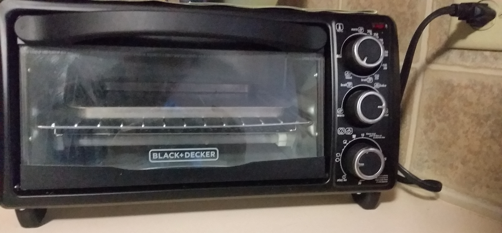
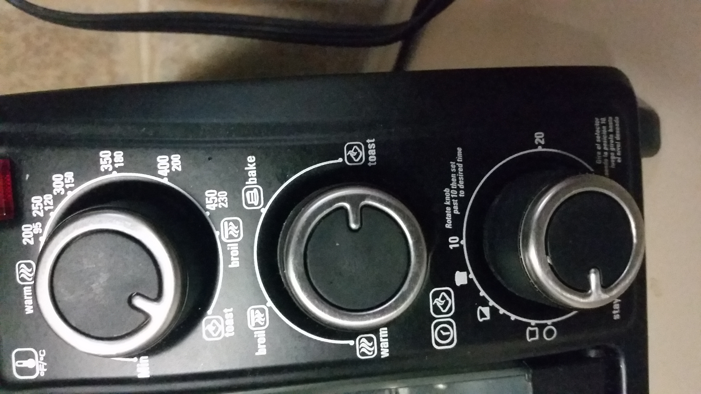

Janki Patel
Homework 1
Overview

Toaster oven is a very common household appliance. We will examin toaster oven's design and its usage. This is a Black+Decker toaster oven. It is ideal for toasting and baking smaller portion food. I mostly use it to toast bread, bagel and make garlic bread. On rare occasion, I bake frozen personal sized pizza, fries, or warm up cold food to keep its crunchiness.
Features

The oven has a handle which indicates how to open its door. Further, there are three knobs on the side. The first two knobs has pretty clear options and instructions. The first knob has temperature written by it, and other options, such as toast, bake, broil. Second knob has toast, bake, broil, and warm options. Also, there are icons associated with the label.

For the last knob, there is a note that says turn the knob pass 10 to set desire time. From my experience of using the toaster, I have noticed that I do not need to go pass 10 for toasting. It is only required if I am baking or warming food for certain time. Further, there is a half toast icon and a full toast icon indicating the knob's position for a toast. Then, other time is given in numbers which would be primarily used for baking.
Oven's State
To show the user that it is on or off, it has a light on the top right corner. Also, inside the oven, we can see orange light when it is warming up.
Guest's Experience
This oven can be complicated to use for guests if they have never used one before. There are multiple places to select toast or bake option before setting time. They have to make sure same options are set in the first two knobs because it has some repeating options. Therefore, that can be easily missed by them. Also, if they are baking, they would have to make sure they go pass 10 and then set their desire time.